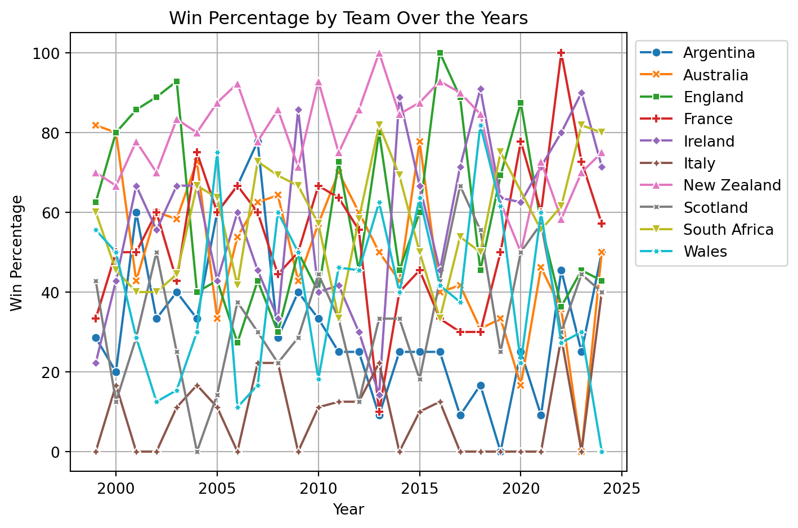

import pandas as pd
import numpy as np
import matplotlib.pyplot as plt
import seaborn as snsExploring the Data:
- Outcome Variable: The outcome variable is predicting the country that will win the 2027 Rugby World Cup. This is measured using historical match data, including win percentages, points scored, and points conceded for each team. The data provides a strong foundation for understanding team performance over time, but it may not fully account for future changes in team dynamics, player injuries, or other unforeseen factors. The analysis aligns with expectations by highlighting New Zealand as the historically dominant team, but it also reveals trends for other competitive teams like South Africa and Ireland.
Important to note that all statistics shown here are amongst games contested between the 10 tier 1 rugby teams.
- Key Explanatory Variables:
-> Win Percentages (Home/Away): Measures team performance based on location.
-> Average Points Scored/Conceded: Reflects offensive and defensive capabilities.
-> World Cup vs. Non-World Cup Performance: Differentiates performance in high-stakes tournaments.
-> Yearly Trends: Tracks team performance over time to identify improvements or declines.
- Summary Statistics: Below is a summary of key variables from the dataset (after filtering for post-1999 data):
| Variable | Count | Mean | Std | Min | 25% | 50% | 75% | Max |
|---|---|---|---|---|---|---|---|---|
| home_score | 1230 | 25.07 | 13.15 | 0 | 16 | 23 | 32 | 101 |
| away_score | 1230 | 20.78 | 11.38 | 0 | 13 | 19 | 27 | 68 |
| homeWin | 1230 | 0.60 | 0.49 | 0 | 0 | 1 | 1 | 1 |
| awayWin | 1230 | 0.38 | 0.49 | 0 | 0 | 0 | 1 | 1 |
| year | 1230 | 2011.50 | 7.19 | 1999 | 2006 | 2012 | 2018 | 2024 |
Data Wrangling and Transformation 1. Data Cleaning:
-> Removed matches before 1999 to focus on recent performance.
-> Dropped rows with missing values to ensure data integrity.
- Data Wrangling:
-> Created a year column by extracting the year from the date column.
-> Added binary variables homeWin and awayWin to track match outcomes.
-> Aggregated data by team to calculate win percentages and average points scored/conceded.
- Excluded Observations:
-> Excluded matches before 1999 to focus on modern rugby dynamics.
-> Dropped rows with missing values (though none were present after filtering).
- New Variables:
-> homeWin/awayWin: Binary indicators for match outcomes.
-> home_win%/away_win%: Team-specific win rates.
-> home_score_avg/away_score_avg: Average points scored per match.
-> home_conceded_avg/away_conceded_avg: Average points conceded per match.
These transformations were done to quantify team performance and home/away advantages, which are critical for predicting World Cup success.
Codebook for EDA
| Variable | Type | Description |
|---|---|---|
| year | Integer | Extracted from date to filter matches post-1999. |
| homeWin | Binary (0/1) | Indicates if the home team won (1) or not (0). |
| awayWin | Binary (0/1) | Indicates if the away team won (1) or not (0). |
| count | Integer | Dummy variable for counting matches (always 1). Used for aggregations. |
| home_win% | Float | Home win percentage for each team. |
| away_win% | Float | Away win percentage for each team. |
| home_score_avg | Float | Average points scored by a team at home. |
| away_score_avg | Float | Average points scored by a team away. |
| home_conceded_avg | Float | Average points conceded by a team at home. |
| away_conceded_avg | Float | Average points conceded by a team away. |
| win_% (yearly) | Float | Yearly win percentage for each team. |
Importing python packages
Importing rugby data and finding the shape
rugbyDF = pd.read_csv("data/rugby.csv")
rugbyDF.shape
#(2783, 11)(2783, 11)#only keeping data after 1999
#will create a year col and then trim the data
rugbyDF['year'] = rugbyDF['date'].str[0:4].astype(int)
rugbyDF = rugbyDF[rugbyDF.year > 1998]
rugbyDF.dropna(inplace = True)
rugbyDF.shape
#new shape of dataframe: (1230,12)(1230, 12)#creating variable to track if home or away team won
#created weights for win, draw, and loss
rugbyDF["homeWin"] = np.where(rugbyDF["home_score"] > rugbyDF["away_score"], 1,0)
rugbyDF["awayWin"] = np.where(rugbyDF["home_score"] < rugbyDF["away_score"], 1,0)
#creating a count var to help with num of games played later on
rugbyDF["count"] = 1for cols in rugbyDF.columns:
print(cols + ": " + (str)(rugbyDF[cols].dtype))
#Since there are 2 numerical cols, i can get summary statistics on them
#year variable will not be taken into account for summary statistics
rugbyDF.describe()date: object
home_team: object
away_team: object
home_score: int64
away_score: int64
competition: object
stadium: object
city: object
country: object
neutral: bool
world_cup: bool
year: int64
homeWin: int64
awayWin: int64
count: int64| home_score | away_score | year | homeWin | awayWin | count | |
|---|---|---|---|---|---|---|
| count | 1230.000000 | 1230.000000 | 1230.000000 | 1230.000000 | 1230.000000 | 1230.0 |
| mean | 25.065041 | 20.778862 | 2011.502439 | 0.595935 | 0.383740 | 1.0 |
| std | 13.147990 | 11.384752 | 7.192092 | 0.490910 | 0.486494 | 0.0 |
| min | 0.000000 | 0.000000 | 1999.000000 | 0.000000 | 0.000000 | 1.0 |
| 25% | 16.000000 | 13.000000 | 2006.000000 | 0.000000 | 0.000000 | 1.0 |
| 50% | 23.000000 | 19.000000 | 2012.000000 | 1.000000 | 0.000000 | 1.0 |
| 75% | 32.000000 | 27.000000 | 2018.000000 | 1.000000 | 1.000000 | 1.0 |
| max | 101.000000 | 68.000000 | 2024.000000 | 1.000000 | 1.000000 | 1.0 |
We can observe that the mean points scored by the home team was approximately 4.2 higher than the away team. All major quadrants have higher points for home_score than away_score, and the std is also greater.
We also notice that the home team won ~59.6%* of the games contested.
*This does not account for games that take place in neutral venues.
#create diff df by teams, then find the summary statistics for those teams.
unq_hteams = rugbyDF['home_team'].unique()
unq_ateams = rugbyDF['away_team'].unique()
unq_teams = np.unique((unq_hteams, unq_ateams))
unq_teams
#shortens the df to only include awayteam, awaywin or hometeam, homewin
rugbyDFH = rugbyDF[["home_team","homeWin","count"]]
rugbyDFA = rugbyDF[["away_team","awayWin","count"]]
#groups the data by team
groupedH = rugbyDFH.groupby('home_team').sum()
groupedA = rugbyDFA.groupby('away_team').sum()
#renames the axis to the same thing
groupedA = groupedA.rename_axis('team')
groupedH = groupedH.rename_axis('team')
#find team win percentage by away and home
groupedH["home_win%"] = groupedH["homeWin"]/groupedH["count"] *100
groupedA["away_win%"] = groupedA["awayWin"]/groupedA["count"] *100
#renames count so that they dont clash when merging
groupedH = groupedH.rename(columns={'count': 'count_home'})
groupedA = groupedA.rename(columns={'count': 'count_away'})
#merge the data frames
teams_wins = pd.merge(groupedH, groupedA, on='team', how='inner')
teams_wins| homeWin | count_home | home_win% | awayWin | count_away | away_win% | |
|---|---|---|---|---|---|---|
| team | ||||||
| Argentina | 30 | 89 | 33.707865 | 29 | 109 | 26.605505 |
| Australia | 92 | 139 | 66.187050 | 54 | 146 | 36.986301 |
| England | 102 | 144 | 70.833333 | 55 | 118 | 46.610169 |
| France | 85 | 126 | 67.460317 | 49 | 129 | 37.984496 |
| Ireland | 90 | 123 | 73.170732 | 49 | 115 | 42.608696 |
| Italy | 13 | 96 | 13.541667 | 6 | 109 | 5.504587 |
| New Zealand | 121 | 139 | 87.050360 | 100 | 137 | 72.992701 |
| Scotland | 46 | 112 | 41.071429 | 26 | 106 | 24.528302 |
| South Africa | 90 | 124 | 72.580645 | 65 | 143 | 45.454545 |
| Wales | 64 | 138 | 46.376812 | 39 | 118 | 33.050847 |
This data frame represents the team wise performance breakdown from 1999-2024.
fig, ax = plt.subplots()
y = np.arange(len(unq_teams)) # Team positions
width = 0.37 # Bar width
plt.barh(y - width/2, teams_wins["home_win%"], width, label='Home Win %')
plt.barh(y + width/2, teams_wins["away_win%"], width, label='Away Win %')
plt.yticks(y, unq_teams)
# Add labels and title
plt.ylabel('Teams')
plt.xlabel('Home Win% and Away Win%')
plt.title('Home and Away Win Percentage By Team')
plt.legend()
fig.tight_layout()
plt.show()
plt.close()Looking at the graph, it is very clear that New Zealand is the best team since 1999. It is also very clear that every team here has a better home record when compared to away record. Italy just keeps losing, hwich makes you question how they became a tier 1 nation.
#a function to create a scoring dataset
def createscoringdataset(rugbyDF):
#shortens the df to only include awayteam, awaywin or hometeam, homewin
rugbyDFH_score = rugbyDF[["home_team","home_score","away_score","count"]]
rugbyDFA_score = rugbyDF[["away_team","away_score","home_score","count"]]
#renaming away_score and home_score to home_conceded and away_conceded
rugbyDFH_score = rugbyDFH_score.rename(columns={'away_score': 'home_conceded'})
rugbyDFA_score = rugbyDFA_score.rename(columns={'home_score': 'away_conceded'})
#groups the data by team
groupedH_score = rugbyDFH_score.groupby('home_team').sum()
groupedA_score = rugbyDFA_score.groupby('away_team').sum()
#renames the axis to the same thing
groupedH_score = groupedH_score.rename_axis('team')
groupedA_score = groupedA_score.rename_axis('team')
#merge the data frames
teams_score = pd.merge(groupedH_score, groupedA_score, on='team', how='inner')
#rename count_x and count_y to home_played and away_played
teams_score = teams_score.rename(columns={'count_x': 'home_played', 'count_y': 'away_played'})
#find team win percentage by away and home
teams_score["home_score_avg"] = teams_score["home_score"]/teams_score["home_played"]
teams_score["away_score_avg"] = teams_score["away_score"]/teams_score["away_played"]
teams_score["home_conceded_avg"] = teams_score["home_conceded"]/teams_score["home_played"]
teams_score["away_conceded_avg"] = teams_score["away_conceded"]/teams_score["away_played"]
return teams_score
teams_score = createscoringdataset(rugbyDF)# Create a 2x2 grid of subplots
fig, axs = plt.subplots(2, 2) # 2 rows, 2 columns
# Add main title
fig.suptitle("Teamwise Home vs Away Performance",
fontsize=16,
y=1.02, # Adjust vertical position (1.0 = top of plot)
fontweight='bold')
# Plot 1: Home Win %
axs[0, 0].barh(unq_teams, teams_wins["home_win%"], color='blue')
axs[0, 0].set_title('Home Win Percentage')
axs[0, 0].set_xlabel('Win %')
# Plot 2: Away Win %
axs[0, 1].barh(unq_teams, teams_wins["away_win%"], color='orange')
axs[0, 1].set_title('Away Win Percentage')
axs[0, 1].set_xlabel('Win %')
# Plot 3: Home vs Away Comparison (side-by-side)
y = range(len(unq_teams))
width = 0.35
axs[1, 0].barh([y - width/2 for y in y], teams_wins["home_win%"], width, label='Home', color='blue')
axs[1, 0].barh([y + width/2 for y in y], teams_wins["away_win%"], width, label='Away', color='orange')
axs[1, 0].set_title('Home vs Away Comparison')
axs[1, 0].set_xlabel('Win %')
axs[1, 0].set_yticks(y)
axs[1, 0].set_yticklabels(unq_teams)
axs[1, 0].legend()
# Plot 4: Difference (Home - Away)
axs[1, 1].barh(unq_teams, teams_wins["home_win%"] - teams_wins["away_win%"], color='green')
axs[1, 1].set_title('Home Advantage (Home - Away)')
axs[1, 1].set_xlabel('Win % Difference')
plt.tight_layout(rect=[0.00, 0.0, 1, 1]) # Adjusts spacing between subplots
plt.subplots_adjust(wspace=0.7, hspace=0.6)
plt.show()
plt.close()This is a more detailed plot from the one above this. It also includes a direct comparison of a teams home advantage. Here it is the difference between their home win% and away win%. We can notice that RSA, IRE, ENG, and AUS are countries that really enjoy playing at home.
# Create figure with 2x2 subplots
fig, axs = plt.subplots(2, 1)
# Add main title
fig.suptitle("Teamwise Offense vs Defense",
fontsize=16,
y=1.02, # Adjust vertical position (1.0 = top of plot)
fontweight='bold')
# --- Plot 1: Home vs Away Points Scored ---
width = 0.35
y = np.arange(len(unq_teams))
axs[0].bar(y - width/2, teams_score['home_score_avg'], width, label='Home', color='#2ecc71') # Green
axs[0].bar(y + width/2, teams_score['away_score_avg'], width, label='Away', color='#e74c3c') # Red
axs[0].set_title('Average Points Scored per Match')
axs[0].set_ylabel('Points')
axs[0].set_xticks(y)
axs[0].set_xticklabels(unq_teams, rotation=45, ha='right')
axs[0].legend()
# --- Plot 2: Home vs Away Points Conceded ---
axs[1].bar(y - width/2, teams_score['home_conceded_avg'], width, label='Home', color='#2ecc71')
axs[1].bar(y + width/2, teams_score['away_conceded_avg'], width, label='Away', color='#e74c3c')
axs[1].set_title('Average Points Conceded per Match')
axs[1].set_ylabel('Points')
axs[1].set_xticks(y)
axs[1].set_xticklabels(unq_teams, rotation=45, ha='right')
axs[1].legend()
# Adjust layout
plt.tight_layout(rect=[0.04, 0.065, 1, 1]) # Adjusts spacing between subplots
plt.subplots_adjust(wspace=0.3, hspace=1.2)
plt.show()
plt.close()
This plot shows teams scoring breakdown home vs away. It gives us an insight into a teams offense and defense over the 25 year time period. Interestingly, Argentina seems to be the only country where their defense is actually more impressive away from home when compared to at home. We notice that their average points conceded away from home is slightly less than when they play at home.
#creates world cup scoring df
worldCupDF = rugbyDF[rugbyDF.world_cup == True]
nonWorldCup = rugbyDF[rugbyDF.world_cup == False]
wc_scoring = createscoringdataset(worldCupDF)
non_wc_scoring = createscoringdataset(nonWorldCup)# Create a 2x2 grid of subplots
fig, axs = plt.subplots(2, 2) # 2 rows, 2 columns
# Add main title
fig.suptitle("World Cup vs Non World Cup Offense and Defense",
fontsize=16,
y=1.02, # Adjust vertical position (1.0 = top of plot)
fontweight='bold')
# Plot 1: World Cup vs Non World Cup home-score-avg
y = range(len(unq_teams))
width = 0.35
axs[0, 0].barh([y - width/2 for y in y], wc_scoring['home_score_avg'], width, label='World Cup', color='#D4AF37')
axs[0, 0].barh([y + width/2 for y in y], non_wc_scoring['home_score_avg'], width, label='Non World Cup', color='#A6A6A6')
axs[0, 0].set_title('Home Points')
axs[0, 0].set_xlabel('Avg Points')
axs[0, 0].set_yticks(y)
axs[0, 0].set_yticklabels(unq_teams)
# Plot 2: World Cup vs Non World Cup away-score-avg
axs[1, 0].barh([y - width/2 for y in y], wc_scoring['away_score_avg'], width, label='World Cup', color='#D4AF37')
axs[1, 0].barh([y + width/2 for y in y], non_wc_scoring['away_score_avg'], width, label='Non World Cup', color='#A6A6A6')
axs[1, 0].set_title('Away Points ')
axs[1, 0].set_xlabel('Avg Points')
axs[1, 0].set_yticks(y)
axs[1, 0].set_yticklabels(unq_teams)
# Plot 3: World Cup vs Non World Cup home-conceded-avg
axs[0, 1].barh([y - width/2 for y in y], wc_scoring['home_conceded_avg'], width, label='World Cup', color='#D4AF37')
axs[0, 1].barh([y + width/2 for y in y], non_wc_scoring['home_conceded_avg'], width, label='Non World Cup', color='#A6A6A6')
axs[0, 1].set_title('Home Conceded ')
axs[0, 1].set_xlabel('Avg Points')
axs[0, 1].set_yticks(y)
axs[0, 1].set_yticklabels(unq_teams)
# Plot 4: World Cup vs Non World Cup away-conceded-avg
axs[1, 1].barh([y - width/2 for y in y], wc_scoring['away_conceded_avg'], width, label='World Cup', color='#D4AF37')
axs[1, 1].barh([y + width/2 for y in y], non_wc_scoring['away_conceded_avg'], width, label='Non World Cup', color='#A6A6A6')
axs[1, 1].set_title('Away Conceded ')
axs[1, 1].set_xlabel('Avg Points')
axs[1, 1].set_yticks(y)
axs[1, 1].set_yticklabels(unq_teams)
# Create invisible artist in center
fig.patches.extend([plt.Rectangle((0.5, 0.5), 0.01, 0.01,
alpha=0, zorder=100,
transform=fig.transFigure)])
# Create unified legend
legend_elements = [
plt.Rectangle((0,0), 1, 1, fc='#D4AF37', ec='#B8860B', lw=1, label='WC'),
plt.Rectangle((0,0), 1, 1, fc='#A6A6A6', ec='#808080', lw=1, label='Non WC')
]
# Place legend in absolute center
legend = fig.legend(handles=legend_elements,
loc='center',
bbox_to_anchor=(0.60, 0.49), # Dead center
bbox_transform=fig.transFigure,
frameon=True,
title='Match Type',
borderaxespad=1)
plt.tight_layout(rect=[0.07, 0.0, 1, 1]) # Adjusts spacing between subplots
plt.subplots_adjust(wspace=0.6, hspace=0.6)
plt.show()
plt.close()This plot shows us a breakdown of teams scoring in world cup games vs non world cup games. We notice that SCT has a big defensive breakdown when it comes to world cup games as they concede approximately 10 more points on average every game. Italy, to no ones surprise, continues to suck at all levels and even more so during world cups.
#only kees the year, awayWin, homeWin, and country
year_wise = rugbyDF[["home_team","away_team","homeWin","awayWin","count","year"]]
#drops the away in homeDf and home in awayDf
home_year_wise = year_wise.drop(columns={"away_team","awayWin"})
away_year_wise = year_wise.drop(columns={"home_team","homeWin"})
#renames so that both df have the same col names for concatenation
home_year_wise = home_year_wise.rename(columns={"home_team":"team","homeWin":"win"})
away_year_wise = away_year_wise.rename(columns={"away_team":"team","awayWin":"win"})
year_wise = pd.concat([home_year_wise,away_year_wise], axis=0).reset_index(drop=True)
#groups the data by year and by team and then cerates a win% col for normalized results
def getGroupedYW(year_wise):
year_wise_grouped = year_wise.groupby(["team","year"]).sum()
year_wise_grouped["win_%"] = year_wise_grouped["win"].div(year_wise_grouped["count"])*100
year_wise_grouped = year_wise_grouped.drop(columns={"win","count"})
return year_wise_grouped
year_wise_grouped = getGroupedYW(year_wise)def plotYearWiseData(year_wise_grouped):
year_wise_grouped_reset = year_wise_grouped.reset_index()
plt.figure(figsize=(7.5, 5))
sns.lineplot(data=year_wise_grouped_reset, x='year', y='win_%', hue='team',
style='team', markers=True, dashes=False)
plt.title('Win Percentage by Team Over the Years')
plt.xlabel('Year')
plt.ylabel('Win Percentage')
plt.legend(bbox_to_anchor=(1.001, 1), loc='upper left')
plt.grid(True)
plt.tight_layout()
plt.show()
plt.close()
plotYearWiseData(year_wise_grouped)
Since this plot is chaotic, I will cut down on the number of countries plotted. 2 plots with 5 countries on each.
# Split teams into two halves
half_idx = len(unq_teams) // 2
first_half_teams = unq_teams[:half_idx]
second_half_teams = unq_teams[half_idx:]
# Create filtered DataFrames
df_first_half = year_wise[year_wise['team'].isin(first_half_teams)]
df_second_half = year_wise[year_wise['team'].isin(second_half_teams)]
#Checking if the teams do not overlap
df_first_half["team"].unique()
df_second_half["team"].unique()array(['Scotland', 'Wales', 'South Africa', 'New Zealand', 'Italy'],
dtype=object)#uses the function to create the grouped data
first_half_grouped = getGroupedYW(df_first_half)
#plots it
plotYearWiseData(first_half_grouped)In this breakdown of ARG, AUS, ENG, FRA, and IRE we can see that Australia starts out really strong at the turn of the millennium and slowly starts to regress. 2023 saw them experience their worst year with no wins to show for. IRE and FRA have been the two teams that continue to improve on average. ENG and ARG are the two wildcard teams that can be either really good or really bad; they are wildly unpredictable.
#uses the function to create the grouped data
second_half_grouped = getGroupedYW(df_second_half)
#plots it
plotYearWiseData(second_half_grouped)
In this breakdown of IT, NZ, SCO, RSA, and WAL it is extremely obvious that NZ is the most dominant team in rugbby. They never went below 50% wins in the last 25 years of rugby contested among tier 1 teams. RSA is one team that is showing continuous improvement and actually surpassing NZ for the best win% in 2024. WAl and SCO are are good teams, but they tend to falter quite often. Italy dominates the losing charts when it comes to tier 1 teams in rugby.
Key Insights from Visualizations
-> New Zealand has the highest win rates (87% at home, 73% away) and scoring averages.
-> Home Advantage: All teams perform better at home, with win rates ~20% higher on average.
-> World Cup Performance: Teams like South Africa and New Zealand maintain strong scoring in World Cups, while others (e.g., Italy) struggle.
-> Trends: New Zealand and Ireland show consistent dominance, while Argentina and Scotland exhibit volatility.
This analysis sets the stage for modeling by identifying key performance metrics and historical trends.